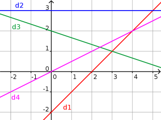
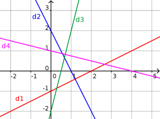

Exercice 2
1.
Soit le graphique suivant.

La droite de $f(x) = \dfrac{1}{2} x$ est :
La droite de $g(x) = 3$ est :
La droite de $h(x) = - \dfrac{1}{3} x + 2$ est :
La droite de $k(x) = x-2$ est :
2.
Soit le graphique suivant.

La droite de $f(x) = -2x+2$ est :
La droite de $g(x) = -\dfrac{1}{4}x+1$ est :
La droite de $h(x) = 4x-2$ est :
La droite de $k(x) = \dfrac{1}{2}x-1$ est :
Droite
Fonctions affines
Accueil